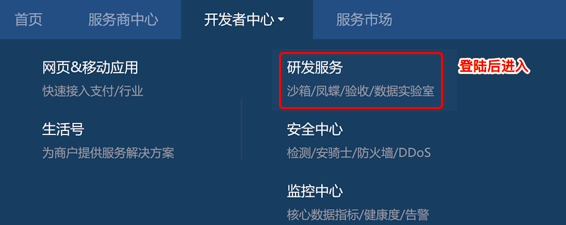
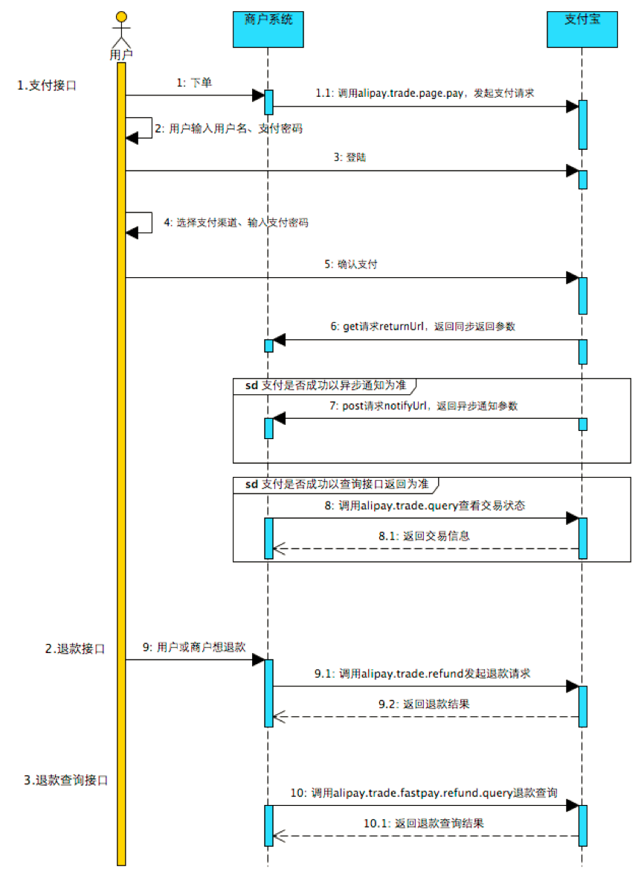
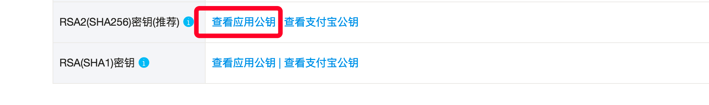
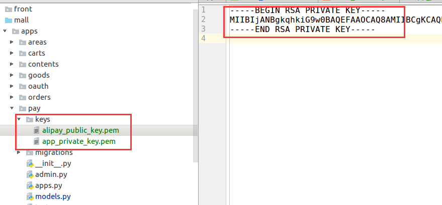

接入支付宝
支付宝开发平台登录
https://open.alipay.com/platform/home.htm
沙箱环境
是支付宝提供给开发者的模拟支付的环境
跟真实环境是分开的
沙箱账号：https://openhome.alipay.com/platform/appDaily.htm?tab=account

支付宝开发者文档
- 文档主页：https://openhome.alipay.com/developmentDocument.htm
- 产品介绍：https://docs.open.alipay.com/270
- 快速接入：https://docs.open.alipay.com/270/105899/
- SDK：https://docs.open.alipay.com/270/106291/
- python对接支付宝SDK：https://github.com/fzlee/alipay/blob/master/README.zh-hans.md
- python对接支付宝SDK安装：
pip install python-alipay-sdk --upgrade
- API列表：https://docs.open.alipay.com/270/105900/
电脑网站支付流程

接入步骤
- 创建应用
- 配置密钥
- 搭建和配置开发环境
- 接口调用
配置秘钥
1. 生成应用的私钥和公钥
openssl
OpenSSL> genrsa -out app_private_key.pem 2048 # 私钥RSA2
OpenSSL> rsa -in app_private_key.pem -pubout -out app_public_key.pem # 导出公钥
OpenSSL> exit
2. 保存应用私钥文件
在pay应用中新建keys目录，用来保存秘钥文件。
将应用私钥文件app_private_key.pem复制到pay/keys目录下。
3. 查看公钥
cat app_public_key.pem
将公钥内容复制给支付宝

4. 保存支付宝公钥
在pay/keys目录下新建alipay_public_key.pem文件，用于保存支付宝的公钥文件。
将支付宝的公钥内容复制到alipay_public_key.pem文件中

注意，还需要在公钥文件中补充开始与结束标志
-----BEGIN PUBLIC KEY-----
此处是公钥内容
-----END PUBLIC KEY-----
